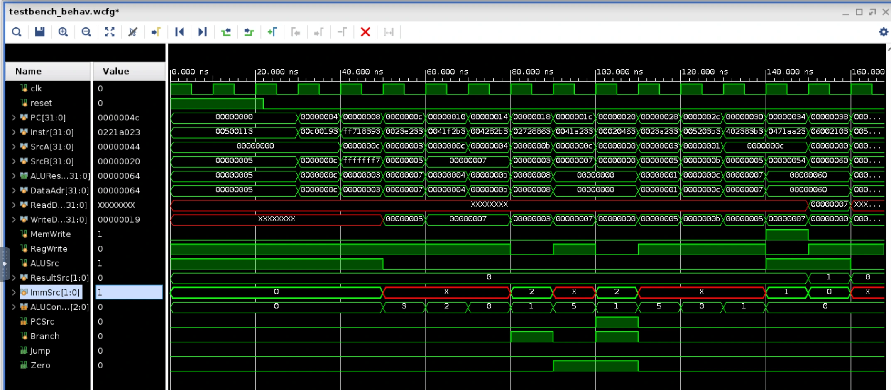
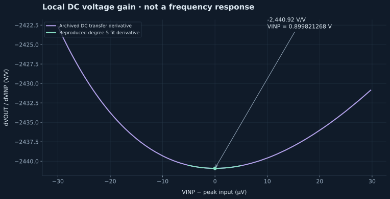

01 / PHYSICAL SYSTEMS
Electrical & Hardware
From circuit-level exploration to complete physical systems.
4 projects

COMPUTER ARCHITECTURE
Single-cycle RISC-V processor
Extended a SystemVerilog processor with AUIPC, SLLI, and JALR, then verified matrix multiplication through simulation waveforms and a self-checking testbench.
SystemVerilogRISC-VWaveform verification
View project →
FEATURED · ANALOG IC DESIGN
Differential CMOS amplifier
ESE 5620 Figure 5: Sky130 differential input and cascoded output, with real Spectre data and verified gain calculations.
Cadence VirtuosoSpectreSky130
Read case study →02↗
FPGA
FPGA Game
A real-time FPGA game built in Verilog with FSM control logic, VGA output, button inputs, and a seven-segment score display.
VerilogFPGAVGAFSM
View project →
ROBOTICS · WASHU ROBOTICS
MATE ROV
Underwater robotics, with work on sensor integration, I²C, NVIDIA Jetson, and the ZED camera.
Embedded systemsSensorsComputer vision hardware
View project →